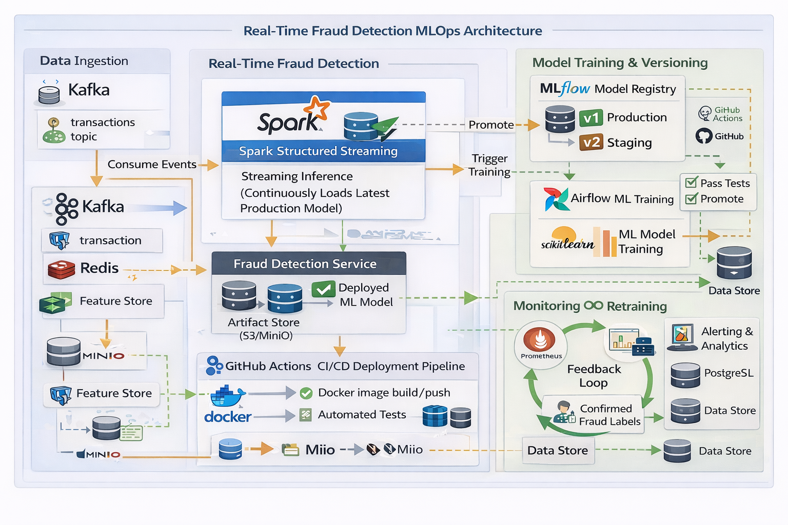

Architecture Overview

Figure: Near real-time fraud detection architecture using Kafka, Spark, Airflow, MLflow, and CI/CD.
How the System Works (End-to-End)
- Event Ingestion: Financial transactions are produced to Kafka topics in real time.
- Streaming Inference: Spark Structured Streaming continuously consumes events and performs fraud prediction using the latest production ML model.
- Model Management: Models are versioned and promoted using MLflow Model Registry (Staging → Production).
- Orchestration: Apache Airflow schedules and controls model training, validation, and promotion workflows.
- CI/CD Automation: GitHub Actions builds Docker images, runs tests, and deploys updated inference services.
- Monitoring & Feedback: Prometheus metrics and confirmed fraud labels feed back into the system for retraining and continuous improvement.
MLOps Practices Demonstrated
- Real-time streaming inference
- Model versioning and controlled promotion
- Automated retraining workflows
- Artifact and feature storage (S3 / MinIO)
- CI/CD for ML systems
- Monitoring, alerting, and feedback loops
Case Study & Code
Detailed case studies, performance metrics, and implementation code will be linked here.